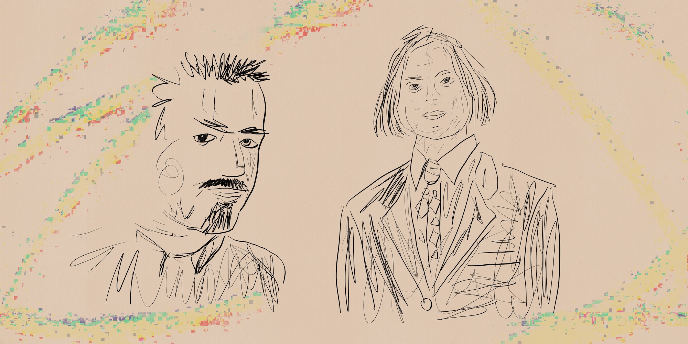
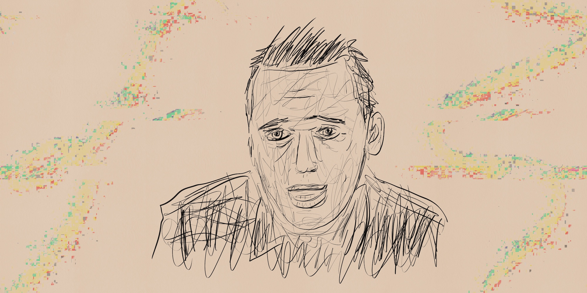
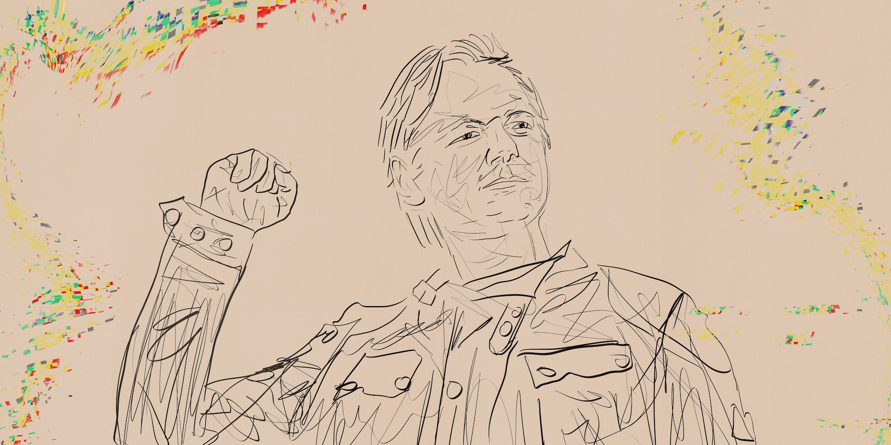
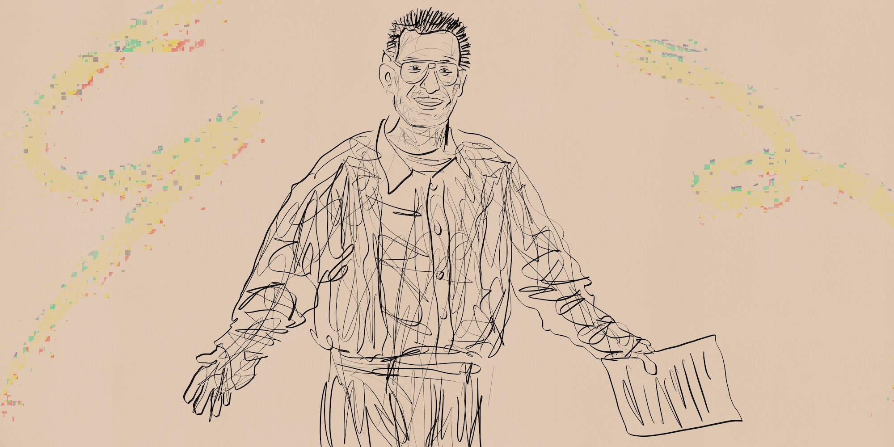

Лабораторная работа №7
🏴☠️ История цифрового взлома: 10 самых известных хакеров всех времен
История цифрового взлома
До 1995 года, когда на экраны вышел фильм «Хакеры» с Анджелиной Джоли в главной роли, в нашей стране почти никто не знал значения этого слова. Это и немудрено, ведь компьютеры в то время были в диковинку, поэтому сложный процесс взлома никому неизвестных иностранных корпораций был похож на фантазии очередного писателя-фантаста. Однако, по ту сторону океана мир хакерства зародился еще в начале 1970-х после популяризации первых ПК.
Это произошло, когда американские правительственные учреждения, впервые начав использовать доселе неизведанные новые технологии, заказали первый в истории пентест (анализ защищенности системы) своего программного обеспечения. Для такого тестирования была собрана первая в истории Tiger team (сейчас так называют группу этичных хакеров), собравшая в себе несколько групп специалистов-технарей. Это были первые взломщики ПО – далекие предки современных хакеров.
Современная глобальная цифровизация породила огромное количество мастеров взлома, ежедневно проверяющих на защищенность данных пользователей сети. Однако, в нашей статье речь пойдет о самых известных злоумышленниках, пойманных с поличным при проведении крупномасштабных атак на известные ресурсы. Поехали!
1. Аарон Шварц
Аарон Шварц – молодой программист, принявший участие в создании социальной сети Reddit, привлек к себе внимание своей активной позицией в отношении принципов открытой науки и свободного интернета. Устав безрезультатно бороться с режимом, в сентябре 2010 года Шварц начал активно действовать и скачал около 5 миллионов научных статей из онлайн-библиотеки JSTOR через аккаунт Массачусетского технологического института (MIT). Эти его манипуляции не остались незамеченными и превратились в два федеральных пункта обвинения в мошенничестве с использованием электронных средств связи, штрафом в миллион долларов и 50 годами тюремного заключения.
Во время судебного процесса он покончил жизнь самоубийством, а через два года после этого он посмертно вошёл в Зал славы Интернета за развернутую им кампанию против Закона о конфиденциальности в сети.
2. Кевин Поулсен
Еще подростком Кевин взломал ARPANET – компьютерную сеть Пентагона. Однако служба безопасности минобороны, поймав парня, решила отпустить его с предупреждением, ввиду отсутствия нанесенного ущерба. Но Поулсен продолжил практиковаться и через десять лет после этого совершил еще одну хакерскую атаку на правительственные ресурсы и, чтобы избежать ареста – ушел в подполье, откуда продолжал взламывать государственные объекты. Через несколько лет его все же задержали и приговорили к пяти годам лишения свободы с лишением права пользования компьютером и интернетом в течение трех лет после освобождения. Выйдя на свободу, Кевин решил заняться журналистикой и в настоящий момент он активно пишет для популярных изданий Wired и The Daily Beast.
3. Майкл Калс
В 2000-е годы Майкл прославился серией распределенных DDoS-атак в различных корпоративных сетях. Он использовал несколько университетских компьютеров, чтобы уничтожить ведущую в то время поисковую систему Yahoo, а вскоре после этого атаковал Dell, eBay, CNN и Amazon. Последствия этих нападений были шокирующими и стали неожиданной новостью для всей корпоративной Америки, потрясенной тем, как легко можно закрыть предприятия стоимостью в миллиарды долларов. Его действия спровоцировали ряд изменений в американском законодательстве, направленных на борьбу с киберпреступностью.
Сегодня Майкл работает этичным хакером, продвигая пентестирование кибербезопасности и тренинги по повышению осведомленности для защиты компаний от онлайн-угроз.
4. Джинсон Джеймс Анчета
Джинсон применил уникальный подход к взлому. Он, используя несколько сетей типа «ботнет», запускал программные атаки с целью нарушить контроль над компьютерной системой как обычных пользователей, так и крупных компаний. Масштабирование таких преступных действий путем объединения сотен различных компьютерных систем в сеть могло иметь разрушительные последствия.
Применяя такой подход в 2005 году, Джинсон атаковал почти полмиллиона машин, используя созданную таким образом сеть, для получения прибыли путем продажи доступа к ней рекламным компаниям и другим хакерам. За свои преступления Анчета был приговорен к пятилетнему тюремному сроку и штрафу в размере 75 000 долларов и стал первым кто, попал в тюрьму за использование ботнета.
5. Мэтью Беван и Ричард Прайс

Эта команда британских хакеров прославилась взломом военных сетей в конце 1990-х годов. Они едва не начали глобальный конфликт, когда просочились в базу данных Корейского института атомных исследований в поисках секретных сведений об их военной системе. Хотя Беван утверждал, что искал информацию об НЛО – ему никто не поверил. Проведенная Беваном и Прайсом серия взломов передовых военных сетей показала всему миру уязвимость этих строго засекреченных технологий.
6. Альберт Гонсалес
Альберта Гонсалеса, которого еще в школе называли прожженым компьютерным гиком, арестовали возрасте 22 лет из-за истории с кражей информации с дебетовых карт одного американского банка. Однако, вместо тюрьмы ему предложили сотрудничество с секретной службой и работу на правительство. Здесь он успешно работал несколько лет, пока опять не перешел на темную сторону. В начале 2000-х он организовал атаку на американскую транснациональную корпорацию дешевых универмагов TJX, в результате которой со счетов компании было украдено около 256 миллионов долларов. За крупнейшее за всю историю взлома пластиковых карт и мошенничество в 2010 году он был приговорен к 20 годам заключения в федеральной тюрьме.
7. Адриан Ламо

Адриан привлек внимание общественности к своей персоне после взлома системы управления контентом Генеральной прокуратуры США и добавлением фальшивой цитаты генерального прокурора Джона Эшкрофта. Он нередко находил ошибки в безопасности организаций и зачастую информировал о них компании. В списке взломанных им корпораций такие гиганты, как Citigroup, Bank of America и Cingular. Адриан постоянно менял дислокацию, выходя в интернет из самых разных мест (кафе,библиотеки, кинотеатры и др.) поэтому заработал себе прозвище «Бездомный Хакер». Осудили же его за взлом сети The New York Times. В ему назначили несколько лет заключения под стражей и штрафу в размере почти 70 000 долларов. Умер известный хакер в 2018 году при странных обстоятельствах.
8. Гэри Маккиннон
В 2002 году Гэри получил известность в мире компьютерных взломов, совершив «крупнейший военный компьютерный взлом всех времен». Этот программист-энтузиаст из северного Лондона взломал несколько серверов флота военно-воздушных сил и Министерства обороны США, а также 16 компьютеров НАСА, тем самым нанеся ущерб государственным системам на сумму около 700 000 долларов. Несмотря на все это, он так и не был осужден за преступление, поскольку Великобритания заблокировала его экстрадицию в Соединенные Штаты, где ему грозит до 70 лет тюремного заключения.
9. Джулиан Ассанж

Одна из самых приметных фигур в мире взлома, показавший всему миру, какое влияние на мир может оказать человек, способный достать и обнародовать даже самую защищенную информацию. Еще в подростковом возрасте он под ником «Mendax» проник в ряд защищенных систем, включая Пентагон и NASA. За это Ассанж получил небольшой штраф и уверенность в том, что сможет сделать это еще раз, что впоследствии и случилось. Многие в мире с готовностью назвали бы Ассанжа одним из крупнейших хакеров всех времен, принимая во внимание огромное количество секретных документов и шокирующих разоблачений, которые он с завидной постоянностью представлял на суд широкой публике с помощью созданного им сайта Wikileaks.
В 2019 году Ассанжа задержали силовые структуры Великобритании, а в начале этого года стало известно о его экстрадиции в США, где ему грозит пожизненное заключение.
10. Кевин Митник

Кевин начал заниматься хакерством в раннем возрасте. Он попал в поле общественного внимания еще в 1980-х годах после того, как взломал базу данных Командования воздушно-космической обороны Северной Америки (NORAD). Затем, несколько лет спустя, в 1989 году он проник на сервера Digital Equipment Corporation (DEC), где скопировал себе код их программного обеспечения. Это привело к его аресту и осуждению, но после освобождения он продолжил свою хакерскую деятельность и взломал систему голосовой почты Pacific Bell – просто чтобы доказать, что он это может. В его биографии есть еще несколько темных пятен, связанных со взломом таких компаний, как IBM, Nokia, Motorola, однако это все в прошлом. Теперь Кевин пишет книги. У него новый имидж защитника конфиденциальности. Его последнее произведение под названием «Искусство быть невидимым» написано простым языком и научит основам безопасности и анонимности в сети любого обывателя.
Заключение
Киберпреступность – бич современного цифрового общества. Ведь благодаря повальной компьютеризации всех сфер жизнедеятельности человека риск взлома и кражи пользовательских данных на сегодняшний день – огромный. Поэтому соблюдайте осторожность при работе в сети и применяйте для работы специально созданный и качественный софт для защиты от хитрых зловредов. Удачи!